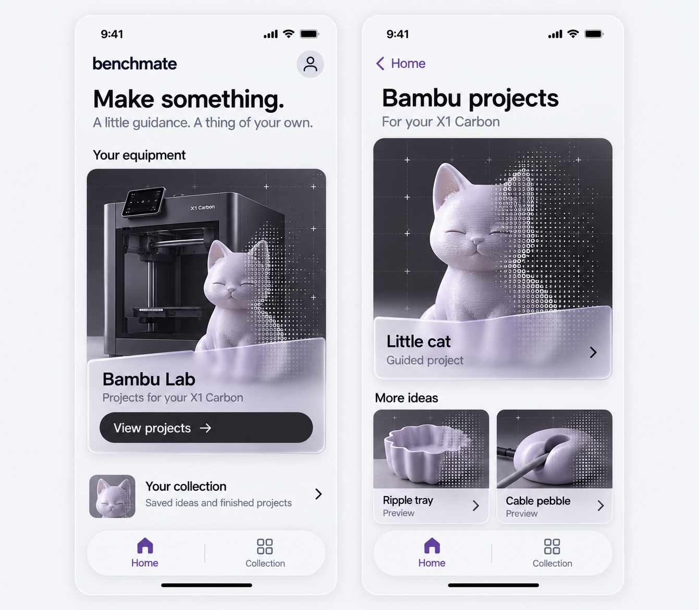
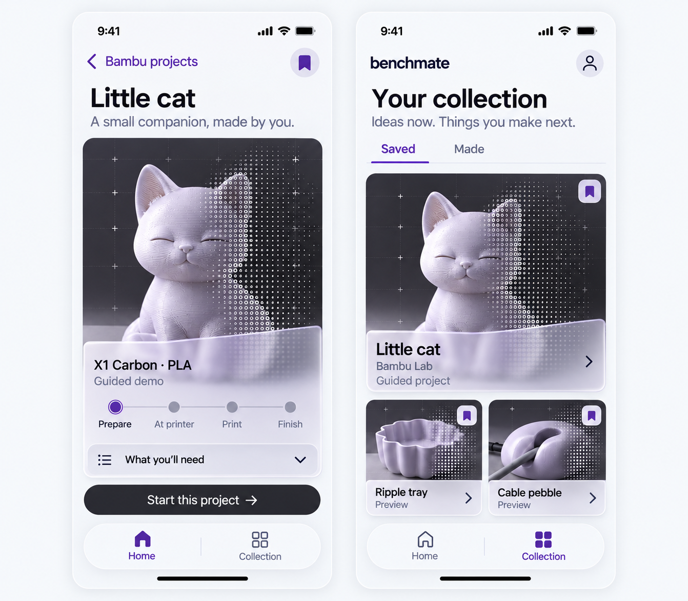

Home, projects, and the things you save.
Four new screens in cool pearl, graphite and violet. Frosted sheets reveal the objects behind them; solid 3D forms resolve into visible character-matrix fields.
Collection is one tap away through the bottom tab or the Home collection row. These links navigate the review gallery; the generated screens are static concepts.
01 / Discover a project
Home's View projects action opens Bambu projects. The featured Little cat card opens the project detail.

02 / Start it, or save it for later
Project detail keeps one main action and optional requirements. Collection groups saved ideas; the Made tab is a proposed destination for completed-project records.

Visual review only. App code is unchanged. Ripple tray and Cable pebble are concept previews; the character fields do not represent actual scanning or sensing.
What to assess before implementation
- Whether the new pearl/graphite/violet palette feels right.
- Whether the visible glass overlap and solid-to-matrix treatment are strong enough.
- Whether Home → Bambu → project and the persistent Collection destination feel clear.
- Headings still need exact sizing on a real viewport. Generated raster typography is not a tested component specification.
The first elongated draft was corrected once. This packet contains three generation calls and two delivered boards; all actual outputs were inspected.